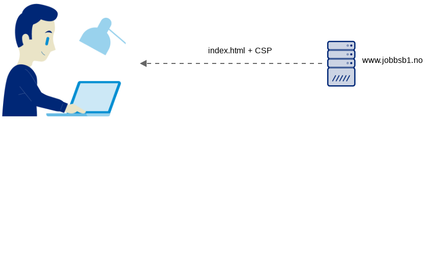
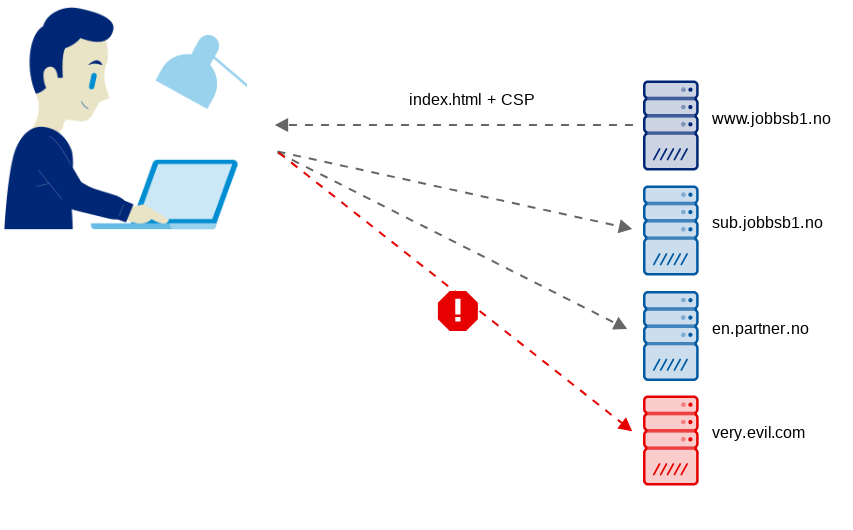

Content Security Policy
i praksis
Jon Are Rakvåg
SpareBank 1


HTTP/1.1 200 OK
Content-Security-Policy: ...
Content-Security-Policy-Report-Only: ...
<html>
<head>
<meta http-equiv="Content-Security-Policy" content="...">
Content-Security-Policy: directive; directive; directive
Content-Security-Policy: script-src static.sparebank1.no;
style-src 'self' static.sparebank1.no;
object-src 'none';
default-src 'self';
report-uri /log/csp
Directives
| Fetch |
Document |
Navigation |
Reporting |
Other |
| child-src |
base-uri |
form-action |
report-uri |
block-all-mixed-content |
| connect-src |
plugin-types |
frame-ancestors |
report-to |
referrer |
| default-src |
sandbox |
navigation-to |
|
require-sri-for |
| font-src |
disown-opener |
|
|
upgrade-insecure-requests |
| frame-src |
|
|
|
|
| img-src |
|
|
|
|
| manifest-src |
|
|
|
|
| media-src |
|
|
|
|
| object-src |
|
|
|
|
| prefetch-src |
|
|
|
|
| script-src |
|
|
|
|
| style-src |
|
|
|
|
| worker-src |
|
|
|
|
Demo
Praktisk framgangsmåte
- Bygg en CSP med OWASP ZAP
- Sett opp rapporteringstjeneste, f. eks report-uri.com
- => Content-Security-Policy-Report-Only
- Følg med på rapporteringen, og oppdater
- Endre til Content-Security-Policy (enforce)
host-based | strict-dynamic
for script-src og style-src
Content-Security-Policy: script-src 'strict-dynamic'
'nonce-o73WIx9dlTnmzQk2lBdkzA=='; (...)
<script src="https://www.google.com/good.js"
nonce="o73WIx9dlTnmzQk2lBdkzA=="/> <!-- ok -->
<script src="https://www.google.com/evil.js"/> <!-- nope -->
Oppsummering
Bruk CSP
Rapportering i sky
Utvikle mot prod med ZAP
Unngå ting som heter unsafe
'strict-dynamic' + nonce kan være mest robust